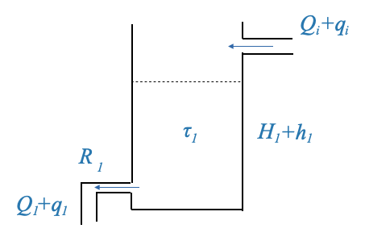

Models of Controlled Devices
Having been introduced to various plant models we frequently encounter in various applications, we are now well-poised to delve into the complete feedback control system. Consequently, our focus with this notebook is on models of controlled devices, as well as the complete systems we’ll build using these devices.
Revisiting Plant Models
In order to ensure that we have a clear foundation, let’s review the scenario with respect to the plant models that we have modeled through transfer functions and block diagrams.

|
This diagram encapsulates the plant’s dynamics through a transfer function, \(G(s)\). The input to the plant, denoted as \(R(s)\), produces an output, \(Y(s)\). This output, also named as the controlled variable of the system, will always be the result of multiplying the transfer function \(G(s)\) with the input \(R(s)\).
\[ Y(s) = G(s)R(s) \]
This equation provides a mathematical representation in the transform domain for the plant, which serves as a subsystem in the overarching control system we’ll soon explore.
Pop-up Question: In the equation \(Y(s) = G(s)R(s)\), where \(Y(s) =\frac{1}{s+1}\) and \(R(s)=1\), , what would \(Y(s)\) be? Answer: \(\frac{1}{s+1}\)
Cascade of Blocks
Let’s now assume we now have two blocks, \(G_1(s)\) and \(G_2(s)\).
If \(R(s)\) is the input to the first block and \(Y(s)\) is the output of the entire setup, and \(X(s)\) is the signal between the two blocks, we can state:
\[ \begin{align} X(s) &= G_1(s)*R(s)\\ Y(s) &= G_2(s)*X(s)\\ \end{align} \]
Combining these equations, we derive:
\[ Y(s) = G_1(s) \cdot G_2(s) \cdot R(s) \]
This illustrates that when two blocks (or subsystems) are cascaded, their transfer functions can be multiplied to ascertain the relationship between the input and the output.
Summing Junctions & Take-off Points
We’ve also frequently seen circles together with algebraic signs in our block diagrams. These denote either error detectors or summing junctions.

|
For instance, if \(R(s)\) and \(B(s)\) are signals at a junction, the resulting signal \(E(s)\) is calculated as:
\[E(s)=R(s)−B(s)\]
or \(E(s)=R(s)+B(s)\) if the signals are being added.
This symbolic representation serves as a convenient method to depict algebraic manipulations of multiple signals.
In some instances, we might wish to tap into a signal for feedback. Such take-offs (or banch-offs) have been illustrated in our diagrams by branching off a main signal line. This ensures that the value of the signal being fed back remains consistent.
To summarize, any system can be comprehensively represented using a combination of these four foundational block diagram elements: a basic block, cascaded blocks, summing junctions, and take-off points.
Liquid Level System: A Detailed Look
To provide further clarity, let’s discuss a liquid level system.
|  |
When modeling a single tank, we primarily concern ourselves with the dynamics between the inflow, outflow, and the height of the liquid. The most common and simplified model is based on the balance of liquid volume, considering the inflow and outflow rates.
Basic Assumptions:
- The cross-sectional area of the tank is constant.
- The liquid in the tank is well-mixed and has a uniform density.
- The outflow rate depends on the liquid height (due to gravitational pressure).
This system’s primary objective is to control the liquid height within a tank. When modeling such a tank, we often derive a first-order system model, with the tank’s dynamics epitomized by a system gain and time constant.
\[ \frac{H_1(s)}{Q_i(s)} = \frac{\frac{R_1}{\rho g}}{\tau_1 s+1} \]
Where:
- \(H(s)\) is the Laplace transform of the liquid height \(h(t)\).
- \(Q_i(s)\) is the Laplace tranform of the inflow rate \(q_in(t)\).
- \(\rho\) is the density of the liquid
- \(g\) is the acceleration due to gravity.
- \(R\): resistance to the flow, typically determined by the size and shape of the outlet.
Consider two tanks. The second tank’s input comes from the first tank’s output. By using our previously derived models, and if we factor in the input flow and liquid height, we can determine the relationship between the tanks and their respective outputs.

|
We can model the second tank as we did for the first one:
\[ \frac{H_2(s)}{Q_1(s)} = \frac{\frac{R_2}{\rho g}}{\tau_2 s+1} \]
we can represent this dynamic relationship with block diagrams:
The input for the second system is \(Q_1(s)\). However:
\[ q_1 = \frac{p_1}{R_1} \]
where \(p_1\) is the pressure at the outflow of the first tank, and the total pressure is \(\bar{p_1}+p_1\), and \(\bar{p_1}\) is the static pressure.
We can hence write:
\[ q_1 = \frac{p_1}{R_1} = \frac{\rho g h_1}{R_1} \]
And this is how we can relate \(Q_1\) and \(H_1\), but note that the output of the first tank, according to our model is \(H_1\) and not \(Q_1\), the second transfer function is different from the first one.
For the second system, the input is \(Q_1\) (inflow) and the controlled variable is \(H_2\).
However, a crucial point of note is that the dynamics of the second tank, do not influence the dynamics of the first tank. This characteristic implies that the second system doesn’t “load” the first. Only in such scenarios can the transfer functions of the two systems be multiplied.
Yet, if the tanks were connected differently, where the second tank’s pressure influences the first tank’s flow, then this “loading” effect would prevent us from simply multiplying their transfer functions. This loading effect can drastically alter the system’s dynamics, even changing a first-order system to a second-order one.

|
If we model this case.
The rate of storage in the tank 1 is:
\[ \begin{align} C_1\frac{dp_1}{dt} &= q_i - \frac{p_1-p_2}{R_1} \end{align} \]
and the rate of storage in the second tank is:
\[ \begin{align} C_2\frac{dp_2}{dt} &= q_1 - \frac{p_2}{R_2} \end{align} \]
where \(p_2\) is the pressure of the second tank. Notice how this affects the flow of the first tank (right most term in the equation (1) above), and hence there is a loading effect of the second tank on the first one.
In this case, the two systems cannot be written as cascading systems! The two subsystems are not independent, and they cannot be considered as two separate blocks.
We can find the overall transfer function as (obtained from the previous two equations):
\[ \frac{H_2(s)}{Q_i(s)} = \frac{\frac{R_2}{\rho g}}{\tau_1\tau_2s^2+(\tau_1 + \tau_2 + \frac{R_2}{R_1})s + 1} \]
Note, while in liquid and thermal systems, we typically have first-order systems, the presence of a loading effect produces a second-order system. In industrial settings, individual tanks are generally modeled using a time constant and system gain. When connected in non-loading fashion, the system’s transfer function remains a second-order one, but is represented by two distinct time constants. In contrast, when connected in a loading manner, the system’s transfer function is again second-order, but characterized by a quadratic lag.
To reiterate and emphasize: In our block diagram representations, if we depict two systems, \(G_1\) and \(G_2\), in cascade, it’s implied that \(G_2\) doesn’t load \(G_1\). This is a crucial assumption that ensures the accuracy of our models and subsequent calculations.
You can have suitable buffers (electrical, hydraulic, thermal, etc.) to avoid the loading effect and the two transfer function can be considered independently. If this is not possible then the two systems must be considered together and will be represented by a single transfer function.
Block Diagram Fundamentals
Before we delve into the intricacies of the feedback control system, let’s take a moment to summarize the four main components we’ve previously discussed.
- Basic Transfer Function: A simple representation of a system’s dynamics with an input \(R\) and an output \(Y\). This system is denoted by a transfer function \(G\).
- Cascade of Blocks: Two transfer functions, say \(G_1\) and \(G_2\), arranged in series. The input to the first block is \(R\), and the final output from the second block is \(Y\).
- Summing Junction: A point in the block diagram where two signals are algebraically added or subtracted. A typical representation includes a circle with “+” and “-” signs, indicating how the incoming signals are combined.
- Take-off Point: A location in the block diagram where a signal, say \(Y\), is branched off without any change. This is typically used for feedback loops.
Pop-up Question: Why do we need a take-off point in a feedback control system?
Answer: The take-off point allows us to use the system’s output (or some processed version of it) to be fed back into the system, typically for comparison with the reference or command signal.
An Overview of the Feedback Control System
Let’s now consider the comprehensive block diagram of a generic feedback control system:
- Command Signal: \(y_r\) is the desired or set-point signal.
- Reference Input Elements: These elements transform the command signal into a reference signal \(r\), using a transfer function \(A(s)\). For example, a desired temperature (\(y_r\)) is converted into a voltage (\(r\)).
- Error Detector: This is a summing junction where the reference signal \(r\) and the feedback signal \(b\) are algebraically combined to produce the actuating error signal \(\hat{e}\).
- Controller: Denoted by \(D(s)\), this block processes the error signal to generate a control signal \(u\).
- Actuator: Represented by \(G_A(s)\), it’s the system’s muscle that amplifies or modifies the control signal to produce the manipulated variable \(m\).
- Plant: This is the main system we want to control, represented by \(G_P(s)\). The output of the plant is the controlled variable \(y\).
- Sensor: The sensor, characterized by \(H(s)\), measures the controlled variable and produces a feedback signal \(b\). For example, the output (\(y\)) can be temperature and the sensor block converts it to voltage (\(b\)).
- Disturbance: \(w\) is an unwanted input that can affect the system’s output. It can happen everywhere, but we model it as if it enters the system at a summing point before the plant.
Standard Block Diagram for Feedback Design
For ease of analysis, we can rearrange the block diagram.

|
In this diagram: - The transfer function between \(Y\) and \(W\) is \(G_P(s)\). - The transfer function between \(Y\) and \(U\) is \(G_A(s)G_P(s)\).
A Convenient Block Diagram
We can also manipulate the diagram for further convenience.
In this diagram: - The transfer function between \(Y\) and \(W\) is \(N(s)\). - The transfer function between \(Y\) and \(U\) is \(G_A(s)G_P(s)\).
By setting \(N(s)=G_P(s)\), both diagrams become identical. Consequently, the position of the summing junction becomes inconsequential. Furthermore, the two subsystems, \(G_A(s)\) and \(G_P(s)\) can be combined to form a unified transfer function represented as \(G=G_A(s)G_P(s)\).
The diagram becomes:
As we progress deeper into the realm of control systems, our visual representation of systems—block diagrams—become indispensable. These diagrams are symbolic representations of the mathematical equations that describe our system. But like any language, there are many ways to convey the same message. Thus, manipulating our block diagrams for clarity or convenience is often necessary.
Pop question: Manipulate the block diagram so that the block \(A(s)\) does not appear in the forward path. - Hint: the signal \(\hat{e}\) must be the same in both cases.
Answer: \(\hat{e} = Ay_r - Hy\). If we were to compute the controlled signal \(u\) in this setup, it would be:
\[ u = DAy_r − DHy\]
This equation describes the relationship between the command signal (\(y_r\)), the controlled signal (\(u\)), and the outpu (\(y\)).
If we move the subsystem \(A(s)\) after the summation junction:

|
In this modified version, our controlled signal \(u\) can be expressed as:
\[ u = ADy_r - \frac{H}{A}ADy \]
The comparison of these two equations confirms the equivalence of both block diagrams. The transformations we applied to go from the initial to the simplified diagram are purely symbolic, yet they present the system in a more digestible manner. We do this because the resulting system becomes more convenient.
Note: - In this last diagram we can say \(y_r=r\) because there is no explicit reference element. Moving the block \(A\) inside the feedback loop, the mathematic representation would be identical and we can say \(y_r=r\). Note that physically it might not make any sense, but the mathematical equations would be the same.
- If \(H=A\) then the signal out of the summation junction becomes \(e=y_r-y\). In all other cases is \(\hat{e}\).
Popup Question: Why is it essential to confirm the equivalence of the two block diagrams?
Answer: Confirming the equivalence ensures that our simplifications or manipulations don’t inadvertently alter the system’s behavior. The system’s performance and response should remain unchanged regardless of its representation.
Unity Feedback System
A further transformation can lead us to what’s referred to as a “Unity Feedback System”.
When \(H(s)\) matches \(A(s)\) — meaning the sensor transfer function aligns with the reference transfer function (a scenario which might be intentionally designed) — the block diagram becomes more streamlined:

|
This block diagram is of paramount importance. Frequently, we can adapt the system to align with this depiction, making it particularly advantageous for design considerations. Due to its significance, it’s referred to as the “unity-feedback system.”
The term “unity” here does not necessarily imply that the sensor transfer function H(s)H(s) is unity (or 1). Rather, through careful manipulation and under certain conditions (like \(H=A\)), we can arrive at a block diagram representation that seems to imply a direct feedback without any transformation. But remember, this is just a representation.
A common misconception is the belief that the signal \(y\) is fed back directly to the summation junction without the intervention of a sensor, or under the assumption that the sensor transfer function is always 1. However, this isn’t necessarily true. While the sensor transfer function can indeed be 1, there can also be a distinct sensor transfer function \(H\). By judiciously selecting the reference transfer function, one can achieve the unity feedback structure.
The Design Feedback Block Diagram
With the previous discussions in mind we can further simplify our block diagram to obtain a form that will be very useful when designing feedback control systems:
Within this model, the blocks \(D\), \(G\), and \(H\) are broad in scope, representing the cumulative effects of all elements along their respective paths. It’s essential to recognize that these blocks might not mirror individual physical components directly. They often emerge from strategic simplifications and rearrangements of the system’s foundational equations.
To delve deeper:
\(D(s)\) primarily signifies the controller’s transfer function. While the controller plays a pivotal role in this block, its composition might also reflect other system adjustments.
\(G(s)\) amalgamates the dynamics of both the plant and the actuators. Despite its composite nature, we’ll continue to label it as the “Plant” due to its predominant influence.
\(H(s)\), on the other hand, isn’t restricted to representing only the sensor’s transfer function. Given its broader role, it’s more aptly described as the “transfer function of the feedback path.”
Note that in this block diagram only the actuation error signal \(\bar{e}\) is present. The signal \(y_r\) is not even present in this block diagram. It should be clear however that when you are calculating the total performance of your system you should be calculating the error \(e = y_r - y\). This error is crucial when analyzing the system’s performance, even if it’s not explicitly part of our primary feedback loop.
Popup Question: What do the blocks \(D\), \(G\), and \(H\) represent in our new block diagram? Answer: They represent cumulative effects and relationships along their respective paths, not necessarily directly mirroring individual physical components.
Disturbances Matter
Lastly, a crucial element we should never overlook is the disturbance, which we represent as \(w\).
The very essence of feedback control theory revolves around disturbances. If our systems experienced no disturbances, the entire field of feedback control might not exist. Open-loop systems could handle undisturbed scenarios perfectly well.

|
This will be the Feedback Block Diagram that we will mostly use.
These block diagrams are to represent the relationships between signals of interest. They are constructed to capture the dynamic relationship between all the variables.
When you model a system, you will always be able to reconduct its model to one of these standard block diagrams.
Popup Question: Why are disturbances crucial in feedback control systems?
Answer: Disturbances are unexpected or unpredictable changes in a system’s environment or inputs. Feedback control systems are designed to mitigate the effects of these disturbances, ensuring the system operates as desired despite these unforeseen changes.
Closed-loop transfer function
Given our standard block diagram, with \(R\) as the reference input and blocks \(D\), \(G\), \(N\), and \(H\) as defined earlier.

|
Now, let’s determine the closed-loop transfer function:
\[\frac{Y(s)}{R(s)}=?\]
Note that this is a two inputs, one output system. We need to apply superposition and consider one input at a time:
Setting Disturbance to Zero
\[\frac{Y(s)}{R(s)}\Big|_{w=0}=\frac{D(s)G(s)}{1+D(s)G(s)H(s)} = M(s)\]
It’s important to note that if our system were a positive feedback loop instead, this equation would see a minus sign in the denominator.
This is called Reference Transfer Function because it relates the reference \(R\) with the output \(Y\).
Setting the Reference Input to Zero
We are now interested in the transfer function between the system output \(Y\) and the disturbance input \(W\), represented as:

|
\[ \frac{Y(s)}{W(s)}\Big|_{R(s)=0} = ? \]
This transfer function effectively captures the system’s response to disturbances. It’s a measure of how external disturbances are filtered or amplified by the system dynamics before influencing the output.
To make our task more manageable, we can streamline our block diagram by combining elements. Specifically, by taking the negative sign of the error detector and consolidating it with our existing minus sign, we can simplify our representation.

|
From this modified diagram, we can derive two fundamental relationships:
- \(\hat{E}(s) = -H(s)Y(s)\)
- \(Y(s) = D(s)G(s)\hat{E}(s) + N(s)W(s)\)
By manipulating and combining these equations, we can eliminate \(\hat{E}(s)\) to determine the relationship between \(Y(s)\) and \(W(s)\).
\[ Y(s) = -D(s)G(s)H(s)Y(s) + N(s)W(s) \]
And therefore:
\[ \frac{Y(s)}{W(s)}\Big|_{R(s)=0} = \frac{N(s)}{1+D(s)G(s)H(s)} = M_W(s) \]
This is called Disturbance Transfer Function.
**Note that both in the reference transfer funtion and in the disturbance transfer function the denominator is the same: \(1+D(s)G(s)H(s)\).
The loop transfer function
The expression:
\[ D(s)G(s)H(s) \]
is termed as the “Loop Transfer Function”. This name originates from the fact that it represents the combined effect of all the transfer functions present within the feedback loop.
Popup Question: Why is the denominator the same for both the reference and disturbance transfer functions?
Answer: The denominator represents the loop transfer function, which is the product of all transfer functions in the feedback loop. This remains consistent, irrespective of the input under consideration.
Concluding Remarks on Transfer Functions Diagrams
Our exploration into transfer functions has provided us with two critical equations:
The reference transfer function, \(M(s)\), which describes the relationship between the system output and the reference input. The disturbance transfer function, \(M_W(s)\), which captures the system’s response to external disturbances.
With these transfer functions in hand, we can represent our system with a more compact block diagram:

|
This condensed representation, which is the equivalent represention of the standard block diagrams we saw before, is invaluable for system analysis as it directly links the system output to the reference and disturbance inputs. By focusing on these transfer functions, we can gain insights into system behavior, stability, and performance.
Advanced Block Diagram Reduction
We delved into the foundations of block diagrams and their reduction procedures. As we progress further into the domain of automatic control, understanding block diagrams becomes paramount. These graphical representations enable us to visualize complex systems, making their analysis and design more intuitive.
Block diagrams are more than mere schematic representations of system equations. These diagrams offer a gateway to simplifying intricate control systems. Their primary utility lies in helping us understand the system’s behavior without delving deep into intricate mathematical equations.
The idea is simple: any practical control system, no matter how complex, can be distilled down to a block diagram. The essence of this representation, as emphasized previously, stems from its ability to encapsulate system equations visually.
Dissecting a Multi-loop System
Consider a multi-loop configuration, as presented in our example. The diagram showcases multiple loops, with the primary loop being the one where the controlled output, \(Y\), is fed back against the reference input \(R\). This primary loop is complemented by several minor feedback loops, making the system’s structure more intricate.
The challenge lies in determining the relationship between \(Y\) and \(R\). This is the relationship that I need from a control perspective.
Note that if we were given the differential equations we could have manipulated them directly to obtain the desired relationship. Alternatively, given the equations we can write the equivalent block diagram and then manipulate the block diagram to obtain the relationship that we need between any variable of interest.
The challenge here is that often these diagrams aren’t immediately reducible to a basic feedback loop. Therefore, we might need to rearrange summing junctions, take-off points, or even move blocks around to create identifiable basic feedback loops.
Solution
- Identifying the Basic Feedback Loop:
Our first task is to transform the multi-loop system into basic feedback loops. A basic feedback loop provides a direct relationship between the input and output, facilitating a simpler analysis.

|
Figure: Basic Feedback Loop
- Manipulating the Block Diagram: There are no basic feedback loops in our diagram for now.
To achieve a basic feedback loop, we may need to relocate summing junctions or take-off points. The goal is to identify and isolate these basic loops, making the system more amenable to analysis.
- Applying Reduction Formulas: Once the basic feedback loops are identified, we apply the standard formula:
\[ \frac{Y(s)}{R(s)}=\frac{G(s)}{1±G(s)H(s)} \]
This formula allows us to reduce a basic feedback loop into a single block, simplifying the entire system.
- Iterative Reduction: The process is iterative. We continue to identify basic feedback loops, apply the reduction formula, and simplify the system until we obtain the desired relationship between \(Y\) and \(R\).
The procedure is not unique.
In our case we can start from:
|
|
- If the input of block \(H_2\) continue to be \(X\) (or the output of block \(H_2\) remains \(H_2X\), then we can move the take off point after the block \(G_4\). This infact ensures that the input into the rest of the diagram remains the same.
We can then modify the previous diagrom to be:
or to make the take off points more explicit:

|
This last diagram makes it easy to identify the first basic feedback loop (Note that it is a positive feedback loop).
We can then reorganise the block diagram as:
which, once we reduce the cascading blocks, we can write as:

|
And now it is easy to see the remaining basic feedback loops. The first one is highlighted in red.
Finally we obtain:

|
which we can reduce once more to obtain the final close loop equivalent:

|
Pop-up Question: Can two different block diagrams represent the same system equations?
Answer: Yes, two different block diagrams can represent the same system equations if they capture the same relationships and dynamics.
Alternative solution
The sequence of reduction is not unique. Different approaches might yield the same result. For instance, relocating summing junctions can offer an alternative method of reduction.

|
To make this change, let’s call the signal that comes out of the block \(H_1\),\(Z = H_1Y\). Since the signal \(Z\) is arriving as input to \(G_3\), it means that if we move the summation before the \(G_2\) block, this block will contribute to an additional gain of \(G_2\). We need to take care of this gain to have an equivalent relationship, and divide by \(G_2\) in the feedback path.

|

|
or also equivalently

|
We can do this because block diagrams are not representing physical systems, they are a mathematical representation.
In conclusion, block diagrams offer a powerful tool for system analysis and design for automatic control. By visually representing system equations, they facilitate understanding, especially for complex systems.
Rules for Block Diagram Manipulation

|
Signal Flow Graphs and the Mason’s Gain Formula
In our journey to understand complex systems, we often rely on visual aids to better comprehend intricate relationships. One such tool is the signal flow graph (SFG), a graphical representation that helps us visualize the flow of signals through a system. By coupling the SFG with Mason’s Gain formula, we can derive the overall transmittance (or transfer function) of a system without resorting to extensive block diagram manipulations.
In this section, we’ll take a closer look at the transformation from block diagrams to signal flow graphs and how to apply Mason’s Gain formula on the resulting representation.
Mason’s Gain Formula is a systematic approach to find the transfer function of a complex system represented by a signal-flow graph or block diagram. The formula provides a way to determine the overall gain of a system by considering individual gains and the loops within the system. Mason’s Gain Formula is particularly useful for systems with multiple loops and intersecting paths. We will come back to this in a moment. For now, let’s focus on the Signal Flow Graphs.
From Block Diagrams to Signal Flow Graphs
Before delving into the intricacies of Mason’s Gain formula, it’s essential to understand how to convert a block diagram into its corresponding signal flow graph. This transformation is not only pivotal for better visualization but also facilitates the application of Mason’s Gain formula.
Understanding Nodes and Paths in SFGs
In a signal flow graph, the term “node” represents a variable or signal, while the arrows or paths between nodes represent the system gain or transmittance.
Let’s break down additional concepts:
- Input Node: A node with no incoming signals. The value of such a node is externally defined. For instance, the node labeled “R” in our previous examples.
- Output Node: A node from which there are no outgoing branches. It’s essentially the end point or the result of our system.
Constructing the Signal Flow Graph
Given the block diagram, let’s attempt to construct its corresponding signal flow graph:
- Identify the input node(s). In our example, R serves as the input node.
- Trace the path from the input to the output, ensuring you only traverse a node or branch once. This is what defines a “forward path.”
- Mark the transmittances or gains along each branch. For instance, a branch with a gain of \(G1\) should be labeled as such.
Let’s take a basic block with input \(R\) and output \(Y\), connected through a system \(G\)

|
Where: - \(R\) is a variable - \(Y\) is a variable - \(G\) is the system gain
We can build the equivalent signal flow graph as:
In a signal flow graph, \(R\) and \(Y\) become nodes, and \(G\) becomes a branch transmittance.
The key concept in signal flow graphs is the idea of nodes representing variables and branches indicating the relationship (or gain) between these nodes.
To keep in mind that _The sum of incoming signals to a node gives the node’s value. The outgoing signal is the value of the node variable.
Consider a feedback loop where a signal \(Y\) is fed back through a gain \(H\).
To convert it to a signal flow diagram:
- How many variables there are? 4: \(R\), \(Y\), \(B\), \(\hat{E}\).
- How many gains there are? 2: \(G\), \(H\)
We start from the two variables of interest: \(R\) and \(Y\) and we draw them as nodes.

|

|

|
The previous diagram can also be represented expliciting the node \(B\) and separating the \(H\) and \(-1\) contributions. In this case the previous representation is enough to capture the dynamics that we need.
And finally we obtain:
In the signal flow graph, the node labeled “R” doesn’t have any incoming signals. In our terminology, such a node with no incoming branches is referred to as an “input node”.
This is because its value is externally defined, and hence the value of the “R” node depends on what we assign to it.
The signal originating from “R” travels along a branch, getting multiplied by a transmittance of 1, before reaching the next node.
Similarly, the “Y” signal travels along its branch, getting multiplied by a transmittance of \(-H\), before it reaches its destination node. As a result, the value at this node is the algebraic sum of these two signals.
Meanwhile, the “\(\hat{E}\)” signal travels along another branch, getting multiplied by the gain “G”, before it reaches its destination. Consequently, the value of the output node “Y” is given by $ G $.
Just for the sake of better visualization, if I were to introduce an additional branch (which isn’t present in the original block diagram) and label it “Y”, this addition wouldn’t impact our system equations. Essentially, this equation suggests \(Y=Y\).

|
While this may seem redundant, it offers an advantage in terms of clarity. We can now term this as an “output node”. An output node is characterized by having no outgoing branches, while an input node is one devoid of incoming branches. Introducing this output node helps to clearly delineate the attribute of interest.
A more complex example

|

|

|
|
|
|
|
|
|
|
|
|
Introducing Mason’s Gain Formula
With the signal flow graph in hand, we can now apply Mason’s Gain formula to determine the system’s overall transmittance (output variable / input variable) or closed-loop transfer function (all variables have been ported in the Laplace domain).
The formula is given by:
\[ \frac{Y(s)}{R(s)} = M(s) = \frac{\sum P_k\Delta_k}{\Delta} \]
Where: - \(M(s)\) represents the overall transmittance or closed-loop transfer function.
Let’s delve into the details of the formula:
Understanding \(\large \Delta\)
- \(\Delta\) = 1−(sum of gains of all independent loops) + (sum of gain products of pairs of non-touching loops) − (sum of gain products of triplets of non-touching loops) + …
It’s crucial to understand the concept of: - “Loops”. A closed path in which a node or branch is traversed once and only once. In other words, starting from any point in the path, if you follow the arrows or directions indicated, you should return to the starting point without retracing any part of the path or revisiting any node or branch. For example:
A few key points to note about loops:
- Direction Matters: The traversal should strictly follow the direction indicated by the arrows in the SFG.
- No Revisiting: No node or branch should be revisited or retraced in the loop.
- Loop Gain: It is the product of all the transmittances (or gains) of the branches that constitute the loop. For example, the Loop Gain, for the loop highligthed in red above, is: \(G_2\times G_3\times -H_2\)
- “Independent loops”: Independent loops are loops where each loop has at least something (a node or a branch) different than the other loops. If you are considering \(X\) loops as independent, then all of these loops should have some element that differentiates them from the other loops in the set. When identifying a set of independent loops in a signal flow graph, every loop in that set should have at least one unique node or branch that is not shared with any other loop in that set.
For example, in our Signal Flow Graph there are three independent loops. They have at least a node or a branch that is different.
- “Non-touching loops.” Two loops are considered non-touching if they do not share any common node or branch. This distinction is vital when applying Mason’s Gain formula.
Understanding \(P_k\)
- \(P_k\) denotes the gain of the \(k\)-th forward path.
- \(k\) is the number of forward paths.
For example, \(P_1\) is the gain of the first forward path. A forward path is the path that takes you from the input to the output node.
In this example, there is only one way to travel from \(R\) to \(Y\). There is no alternative forward path and hence there one and only \(P_1\).
The gain is hence: $P_1 = G_1 G_2 G_3 G_4 $
Understanding \(\Delta_k\)
\(\Delta_k\) is the value of \(\Delta\) when computed for the system excluding (“not touching”) the \(k\)-th forward path. In simpler terms, \(\Delta_k\) is calculated using the same formula as \(\Delta\) but ignoring all loops that touch or intersect with the \(k\)-th forward path.
To explain further:
Forward Path: A forward path is a traversal from the input node to the output node in the direction of the arrows without any repetition of nodes or branches. The k-th forward path refers to a specific forward path that we are focusing on.
Not Touching the k-th Forward Path: This means that when calculating \(\Delta_k\), we exclude all loops that have any node or branch in common with the k-th forward path.
We use the same definition we gave for \(\Delta\) but all the terms must not “touch” the \(k-\)th forward path, which means that they do not have anything in common (branch or node) with the \(k-\)th forward path.
For example:
\(\Delta_1\) = 1 - (sum of gains of all independent loops not touching the 1st forward path) + (sum of gain products of pairs of non-touching loops not touching the 1st forward path) − (sum of gain products of triplets of non-touching loops not touching the 1st forward path) + …
Let’s apply all this to the Signal Flow Graph:

|
- First of all, we need to identify the value of \(k\), which is 1 in this case. A node or a branch in fact must be traversed once and only once.
\[ \frac{Y(s)}{R(s)} = M(s) = \frac{\sum P_k\Delta_k}{\Delta} = \frac{P_1\Delta_1}{\Delta} \]
- \(\Delta\) = 1−(sum of gains of all independent loops) + (sum of gain products of pairs of non-touching loops) − (sum of gain products of triplets of non-touching loops) + …
\(\Delta = 1 − \Big[ \Big( -G_2G_3H_2 \Big) + \Big(G_3G_4H_1 \Big) + \Big(-G_1G_2G_3G_4H_3 \Big)\Big]\)
Note that there are no pairs of non-touching loops. At least a node or a branch is common in all the loops. Since there are no pairs, there are no triplets, etc.
- \(\Delta_1\)
\(\Delta_1=1\).
All loops have something in common with the forward path.
- \(P_1\)
$P_1 = G_1 G_2 G_3 G_4 $
And we have everything we need to write the overall closed loop transfer function on the system.
Example

|
\[ \frac{Y(s)}{R(s)} = M(s) = \frac{\sum P_k\Delta_k}{\Delta} \]
\[k=2\]

|
\(P_1 = G_{12}G_{23}G_{34}G_{45}\)
\(P_2 = G_{12}G_{23}G_{35}\)
Note that \(G_{44}\) is a closed loop so cannot be included.
There are 5 loops:

|
And we can calculate the loop gains for these loop.
Note that \(G_{34},G_{45},G_{35}\) is not a loop because direction matters!.
There is two pairs of non-touching loops.
The first one is:

|
And its gain is: \(G_{23}G_{32}G_{44}\).
The second one is:

|
And its gain is: \(G_{23}G_{35}G_{52}\).
And we need to sum them up in the formula for \(\Delta\)
No triplets.
Finally: - \(\Delta_1 = 1\) because all loops are touching the forward path. - \(\Delta_2 = 1-G_{44}\) because it is the only loop that does not touch the 2nd forward path.
We have all the elements to calculate the Mason’s gain formula and obtain the closed loop transfer function.
What is the self loop?
A self-loop, in the context of signal flow graphs, refers to a feedback loop where a signal or variable directly influences itself, often through some transformation. Essentially, a portion of the output is fed back directly to its own input.
The second one is:

|
Let’s break this down:
- You have a block (or system) with an input and an output.
- The output is fed back to the input through a feedback system or gain.
- There is a summing junction at the input that combines the original input with the feedback from the output.
Comments
Moving forward, we will omit the \(Z(s)\) subsystem responsible for producing the indirectly controlled variable. Since it doesn’t play a role within the feedback loop, our primary attention will be directed towards the controlled variable \(y\).
Actuating vs System Error: The difference between \(\hat{e}\) and \(e\) is crucial. While \(\hat{e}\) is the signal exciting the controller, i.e., the difference between \(b\) and \(r\); \(e\) is the real error between the controlled variable \(y\) and the command signal \(y_r\). It is important to understand that \(b\ne y\). Our primary goal in a feedback system is to minimize \(e\), bringing the system’s output close to the desired set-point.
We call: - \(e=y-y_r\), the system error signal. - \(\bar{e} = r-b\), is the actuacting error signal.
The difference between the two signals depends on the specific \(A(s)\) and \(H(s)\).